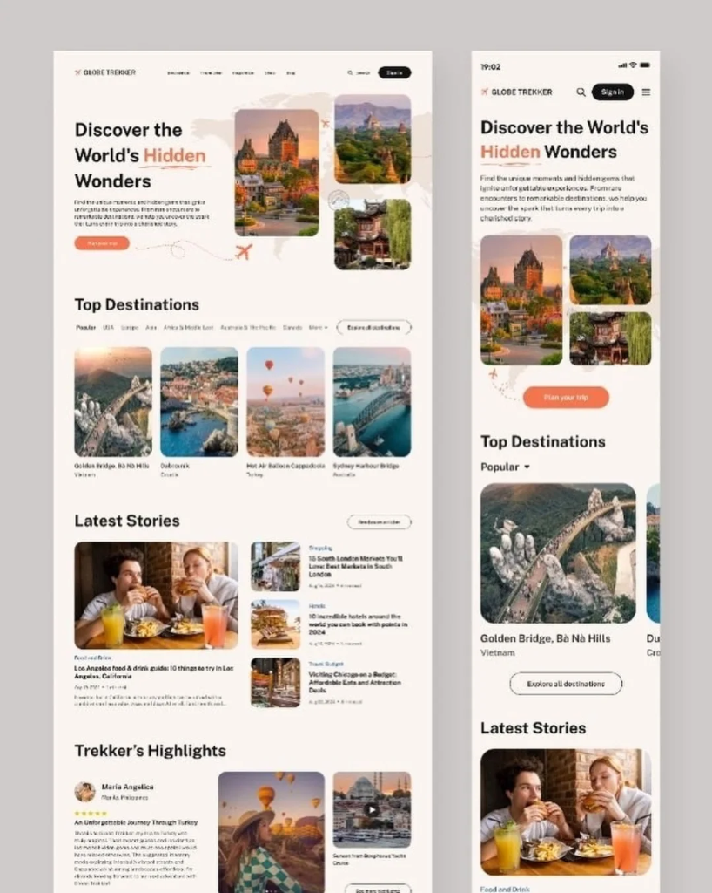

Los Angeles' best 8 drive guide to things to try in LA
Cruising the best scenic routes Southern California has to offer.
Read Article
Vibrant street food stalls offering authentic flavors in the heart of Hanoi, Vietnam.
Southeast Asia is a region where life happens on the sidewalk, and nowhere is this more evident than in its culinary scene. From the spicy aromas of Bangkok to the savory broths of Vietnam, the street food of this region is a complex tapestry of history, culture, and flavor.
Bangkok is widely considered the street food capital of the world. As the sun sets, the city transforms into a giant open-air kitchen. Don't miss the classic Pad Thai, but for a true local experience, seek out a stall serving *Som Tum* (green papaya salad) pounded fresh with chilies, lime, and fish sauce. The balance of sweet, sour, salty, and spicy is the hallmark of Thai cuisine.
"Street food is the great equalizer; in front of a good food stall, everyone is just a hungry traveler." - Chef's Wisdom
In Vietnam, food is a labor of love. A bowl of *Pho* isn't just a meal; it's a centuries-old tradition. The broth is often simmered for over 12 hours with star anise, cinnamon, and grilled ginger. Whether you're sitting on a tiny plastic stool in Hanoi or a bustling market in Ho Chi Minh City, each spoonful is a warm embrace of Vietnamese heritage.

The rhythmic sizzle of a wok and the steam from a fresh bowl of noodles.
Malaysian street food is a fascinating blend of Malay, Chinese, and Indian influences. In Penang, the "Hype City" of food, you must try *Char Kway Teow* – flat rice noodles stir-fried with shrimp, cockles, and bean sprouts. The secret is the "wok hei" or the breath of the wok, which gives the dish its smoky, charred flavor.
Vibrant spices and fresh ingredients at a local wet market in Kuala Lumpur.
The best way to experience street food is to follow the crowds. If a stall has a long line of locals, it's almost guaranteed to be good. Don't be afraid of the busy atmosphere; it's all part of the charm. Remember to stay hydrated and keep an open mind – some of the most unusual sights lead to the most incredible tastes.
Generally, yes! Choose stalls that are busy and where food is cooked to order at high temperatures. Drinking bottled water is also recommended.
While it varies by country, Pad Thai (Thailand), Pho (Vietnam), and Nasi Lemak (Malaysia) are some of the most beloved and globally recognized dishes.
A culinary journey through Southeast Asia is more than just a series of meals; it's an exploration of the region's heartbeat. Each dish tells a story of migration, survival, and celebration. So next time you're in the region, step off the beaten path and follow your nose – an unforgettable feast is just around the corner.


Cruising the best scenic routes Southern California has to offer.
Read Article
Discover the hidden pearls of the Adriatic coastline.
Read Article
Looking back at history in the world's most unique site.
Read Article